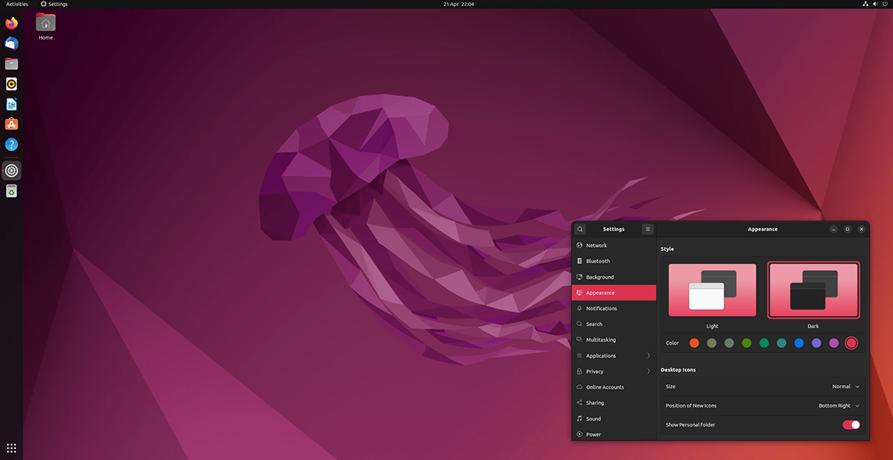
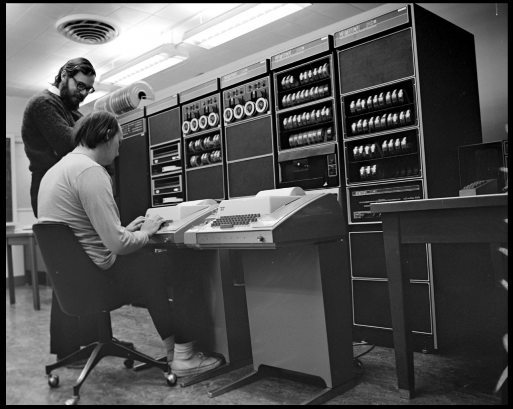
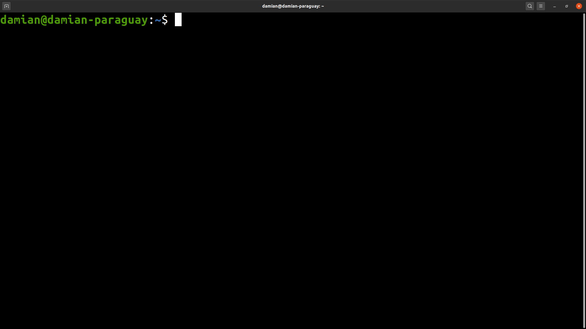
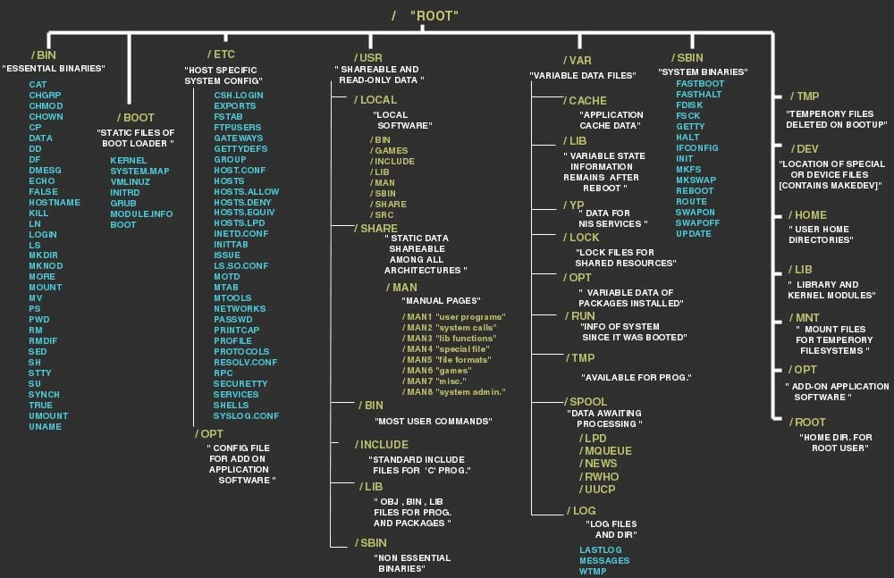
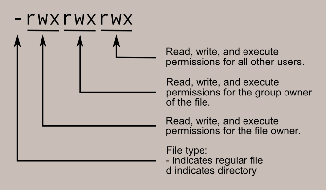

The Linux Command Line
Data Science for Economics
16 January, 2029
Interfaces and Computational Work 🖥️

The Matrix: Command Line Aesthetic
The Command Line 💻
The Command Line is also an interface (“CLI”), but provides a lower level way to interact with your OS
- You are not constrained by the design of graphical user interfaces (GUIs)
- Trade-off between simplicity (GUIs) and flexibility (CLI)
- Also you may hear these related concepts:
- The Terminal: The text input and output environment
- The Shell: The command line interpreter
- BASH: The Linux and Mac default shell (Bourne Again SHell)
- The Command Line: The physical line where commands are typed
Key point: The shell as we will think of it will refer to the BASH version
Windows note: Windows also has PowerShell, but BASH is the industry standard ✨
Why Learn About the Command Line? 🎯
BASH in particular offers unique advantages:
- Remarkable flexibility for OS-level operations
- Often genuinely the fastest way to get tasks done
- At times I access the command line from directly within other languages because it offers a faster way to do something
- Helps you understand many other languages
- Many command line style functions have been included in other higher-level languages
- For example:
ls,head,tail,pwd,cd, pipes (|), etc.
- Some OS you will work with only have a command line interface
- Most servers you work with will be running a version of BASH
- Industry expectation: Data scientists are expected to be comfortable with command line 💼
The Unix Philosophy 🔧
The philosophy behind Linux/Unix, espoused by Thompson & Ritchie (early developers):
- Write programs that do one thing and do it well
- Write programs to work together
- Write programs to handle text streams, because that is a universal interface

Thompson & Ritchie
This philosophy drives everything we do in the command line!

The Command Line Interface
Understanding the Command Prompt 🔍
Generic format:
username@machine-name:directory-location$
If “super user” (root):
username@machine-name:directory-location#
What does this tell you?
- Blue: Who you are (your username)
- Red: What computer you’re on (useful when working remotely!)
- Orange: Where you are in the file system
- $ vs #: Regular user vs super user (admin privileges)
Some Simple Commands 🚀
Let’s start with the basics:
| Command | Function | Example |
|---|---|---|
date |
Prints out current date and time | date |
echo argument |
Prints argument | echo "Hello World" |
cal |
Provides a monthly calendar | cal |
man argument |
Provides the manual page for argument | man ls |
Pro Tip
The man command is your friend! Whenever you forget how to use a command, just type man [command]. Press q to quit the manual page.
In-Class Activity
Try these commands together! Explore man ls to see all the different options available.
Navigating and Looking Around 🗺️
Essential navigation commands:
| Command | Function | Example |
|---|---|---|
pwd |
Print working directory | pwd |
ls |
List directory contents | ls -la |
cd |
Change directory | cd Documents |
Key concepts to understand:
- Special directories:
.= current directory..= parent directory (one level up)~= your home directory/= root directory
- Paths can be relative or absolute:
- Relative:
cd ../Documents(relative to where you are) - Absolute:
cd /home/username/Documents(full path from root)
- Relative:
Understanding Directory Structures 📁

Linux File System Hierarchy
Important directories to know:
/home: User home directories/etc: System configuration files/var: Variable data (logs, etc.)/tmp: Temporary files/usr: User programs and data
Exploring Files 📄
Commands for viewing file contents:
| Command | Function | Example |
|---|---|---|
cat file |
Concatenates files and prints output | cat data.txt |
wc file |
Provides a word count of file contents | wc -l data.txt |
head file |
Dumps the first few lines of files | head -n 20 data.txt |
tail file |
Dumps the last few lines of files | tail -n 10 data.txt |
Useful Options
head -n 20 file.txtshows first 20 linestail -f logfile.txtfollows a file in real-time (great for logs!)wc -lcounts lines,wc -wcounts words,wc -ccounts characters
Manipulating Files ⚠️
Commands for creating, moving, and deleting:
| Command | Function | Example |
|---|---|---|
cp file1 file2 |
Copies file1 to file2 | cp data.txt backup.txt |
mv file1 file2 |
Moves file1 to file2 | mv old.txt new.txt |
rm file |
Eliminates file | rm unwanted.txt |
mkdir dir |
Creates directory dir | mkdir new_folder |
DANGER ZONE! 💀
You should be extremely careful with these commands. A slip of the finger eliminates files (or more!) permanently. There is no “Recycle Bin” in the command line!
Especially dangerous: - rm -rf / (DO NOT RUN THIS - deletes everything!) - Always double-check before pressing Enter on rm commands - Consider using rm -i for interactive mode (asks before deleting)
Data Wrangling Commands 🔧
Powerful tools for processing data:
| Command | Function | Use Case |
|---|---|---|
sort argument |
Sorts argument and prints sorted output | Alphabetize data |
join file1 file2 |
Joins lines of files on a common field | Merge datasets |
uniq argument |
Removes duplicate lines of sorted argument | Find unique values |
grep |
“Global Regular Expression Print” | Search for patterns |
sed |
Stream editor | Find and replace |
awk |
Pattern scanning and text processing language | Complex data manipulation |
We will explore these in detail shortly…
Regex in Real Life 😅

xkcd #208 — Randall Munroe
Input/Output Redirection 🔄
Key concept: BASH commands can take input and produce output in flexible ways
Inputs can come from:
- Directly as an argument to commands
- From files
- From other commands! 🎉
Outputs can go to:
- Directly printed on screen
- Saved in a file
- Appended to a file
- Passed to other commands! 🎉
This suggests that a series of commands can be sequenced together, omitting any interim input/output
Redirection Operators ⚡
Key elements:
| Operator | Function | Example |
|---|---|---|
< |
Take input from file | sort < unsorted.txt |
> |
Send output to file (overwrite) | ls -l > filelist.txt |
>> |
Append output to file | echo "new line" >> log.txt |
| |
“Pipeline” for concatenating commands | ls -l | grep "txt" |
Remember
>overwrites the file completely>>adds to the end of the file|is one of the most powerful features of the command line!
Practical Example: Counting Files 📊
How many files do we have?
This pipes the list of files to the word count command, counting lines!
In-Class Activity
Navigate to the DATE_FILES directory and try: 1. Count total files with ls | wc -l 2. Count files from specific years using wildcards 3. Use head and tail to explore file naming patterns
Combining Files with cat 🔗
In-Class Activity
- Create a file combining all data from a specific month
- Use
wcto verify the number of lines - Compare two files using
diffto check if they’re identical
Comparing Files with diff 🔍
Check if two files are identical:
- No output = files are identical
- Output shows differences between files
<indicates lines only in first file>indicates lines only in second file
Count different lines:
Pipeline Examples 🔗
Simple search:
This is equivalent to (but much better than):
More complex pipeline:
This: reads a file → filters for 2024 → sorts → removes duplicates → counts lines
Pipelines extend arbitrarily! You can chain as many commands as needed. 🚀
Practical Example: Sorting and Joining 📊
In-Class Activity
Navigate to EXAM_SCORES directory and: 1. Explore the structure of CLASS_1_SCORES.txt and CLASS_2_SCORES.txt 2. Sort both files by name 3. Use join to combine scores 4. Try sorting by score instead (use man sort to find the right option!)
Scenario: Combine exam scores from two classes
# Sort each class file
sort CLASS_1_SCORES.txt > class1_sorted.txt
sort CLASS_2_SCORES.txt > class2_sorted.txt
# Join on student names (first column)
join class1_sorted.txt class2_sorted.txt > joined_scores.txtResult: One file with each student’s scores from both classes!
Introduction to Regular Expressions (regex) 🎯
What are Regular Expressions?
Regexs are patterns used to match character combinations in strings. “Find” with superpowers!
Why use regex?
- Search for complex patterns, not just exact matches
- Validate input (emails, phone numbers, dates)
- Extract specific information from text, or find and replace with patterns
Basic regex patterns:
| Pattern | Matches | Example |
|---|---|---|
. |
Any single character | c.t matches cat, cot, cut |
* |
Zero or more of previous | co*l matches cl, col, cool |
+ |
One or more of previous | co+l matches col, cool (not cl) |
? |
Zero or one of previous | colou?r matches color, colour |
^ |
Start of line | ^The matches “The” at line start |
$ |
End of line | end$ matches “end” at line end |
Regular Expressions: Character Classes 📝
Character classes let you specify sets of characters:
| Pattern | Matches | Example |
|---|---|---|
[abc] |
Any character in brackets | [aeiou] matches vowels |
[^abc] |
Any character NOT in brackets | [^0-9] matches non-digits |
[a-z] |
Any character in range | [A-Z] matches uppercase |
\d |
Any digit | \d\d\d matches 3 digits |
\w |
Any word character | \w+ matches whole words |
\s |
Any whitespace | \s+ matches spaces/tabs |
Quantifiers for repetition:
{n}- exactly n times{n,}- n or more times{n,m}- between n and m times
Example: [0-9]{3}-[0-9]{4} matches phone numbers like 555-1234
Regular Expressions: Practical Examples 🔍
Email validation:
[a-zA-Z0-9._%+-]+@[a-zA-Z0-9.-]+\.[a-zA-Z]{2,}Date matching (YYYY-MM-DD):
[0-9]{4}-[0-9]{2}-[0-9]{2}Finding IP addresses:
[0-9]{1,3}\.[0-9]{1,3}\.[0-9]{1,3}\.[0-9]{1,3}UK postcode:
[A-Z]{1,2}[0-9]{1,2} [0-9][A-Z]{2}Testing Regex
Use online tools like regex101.com to test your patterns before using them in commands!
grep: Global Regular Expression Print 🔎
What is grep?
grep searches files for lines matching a pattern and prints them. It’s one of the most powerful and commonly used command-line tools!
Basic syntax:
Common options:
| Option | Function | Example |
|---|---|---|
-i |
Ignore case | grep -i "error" log.txt |
-v |
Invert match (show non-matching) | grep -v "comment" file.txt |
-n |
Show line numbers | grep -n "TODO" script.sh |
-c |
Count matching lines | grep -c "^#" file.txt |
-r |
Recursive search in directories | grep -r "function" . |
-l |
Show only filenames | grep -l "import" *.py |
--color |
Highlight matches | grep --color "pattern" file.txt |
grep Examples in Action 🎬
Search for a specific word:
Case-insensitive search with color:
Count occurrences:
Find files containing a pattern:
Combine with other commands:
Regular Expressions with grep 🎯
In-Class Activity
Using the WB_educ_indicators.txt file: 1. Search for all lines containing “Population ages 0” 2. Count how many times “Female” appears 3. Find all unique indicator types using grep + sort + uniq
Using regex patterns in grep:
# Find lines starting with a digit
grep '^[0-9]' data.txt
# Find email addresses
grep '[a-zA-Z0-9._%+-]+@[a-zA-Z0-9.-]+\.[a-zA-Z]{2,}' contacts.txt
# Find dates in format YYYY-MM-DD
grep '[0-9]{4}-[0-9]{2}-[0-9]{2}' events.txt
# Find lines ending with specific words
grep 'error$' logfile.txt
# Find lines with exactly 3 digits
grep '\b[0-9]{3}\b' numbers.txtIntroduction to sed: Stream Editor ✏️
What is sed?
sed (Stream EDitor) is a powerful text manipulation tool that processes text line by line. It’s perfect for: - Find and replace operations - Deleting lines - Inserting text - Transforming text
Basic syntax:
The ‘s’ command (substitute) is the most common sed operation: - s/old/new/ - replace first occurrence - s/old/new/g - replace all occurrences (global) - s/old/new/2 - replace second occurrence - s/old/new/gi - replace all, case-insensitive
sed: Common Operations 🔧
Find and replace:
# Replace first occurrence per line
sed 's/cat/dog/' file.txt
# Replace all occurrences (global)
sed 's/cat/dog/g' file.txt
# Case-insensitive replacement
sed 's/error/ERROR/gi' log.txt
# Replace and save to new file
sed 's/old/new/g' input.txt > output.txt
# Replace in-place (modify original file)
sed -i 's/old/new/g' file.txtDelete operations:
sed: Advanced Examples 📚
Multiple operations:
# Chain multiple substitutions
sed 's/cat/dog/g; s/mouse/rat/g' file.txt
# Or use multiple -e flags
sed -e 's/cat/dog/g' -e 's/mouse/rat/g' file.txtUsing delimiters:
Capturing groups:
# Swap first two words on each line
sed 's/\([^ ]*\) \([^ ]*\)/\2 \1/' file.txt
# Extract dates from format "Date: 2024-01-15"
sed 's/Date: \([0-9-]*\)/\1/' file.txtLine insertion:
Introduction to awk: Pattern Processing Language 🎓
What is awk?
awk is a complete programming language designed for text processing. It’s named after its creators: Aho, Weinberger, and Kernighan.
Why use awk? - Process structured data (columns/fields) - Perform calculations on data - Generate reports - Complex pattern matching and text transformation
Basic structure:
Key concepts: - Automatically splits each line into fields (columns) - $1, $2, $3, … represent field 1, field 2, field 3, etc. - $0 represents the entire line - Default field separator is whitespace (spaces/tabs)
awk: Basic Usage 📊
Print specific columns:
# Print first column
awk '{print $1}' file.txt
# Print multiple columns
awk '{print $1, $3}' file.txt
# Print with custom formatting
awk '{print "Name:", $1, "Score:", $2}' scores.txtChanging field separator:
# Use semicolon as separator
awk -F ";" '{print $1}' data.csv
# Use comma (for CSV files)
awk -F "," '{print $1, $3}' data.csv
# Multiple character separator
awk -F "::" '{print $2}' file.txtPattern matching:
awk: Advanced Features 🚀
Built-in variables:
# NR = Number of Records (line number)
awk '{print NR, $0}' file.txt
# NF = Number of Fields (columns in current line)
awk '{print NF, $0}' file.txt
# Print last column of each line
awk '{print $NF}' file.txtConditions and calculations:
awk: Practical Examples 💡
Working with delimited data:
# Extract specific columns from CSV
awk -F ";" '{print $2, $11}' WB_educ_indicators.txt
# Print with custom output separator
awk -F ";" 'BEGIN {OFS=","} {print $1, $2, $3}' input.txtStatistical operations:
# Find maximum value in column 2
awk 'BEGIN {max = 0} {if ($2 > max) max = $2} END {print max}' data.txt
# Count lines matching condition
awk '/error/ {count++} END {print count}' logfile.txt
# Group and count
awk '{count[$1]++} END {for (word in count) print word, count[word]}' file.txtCombining patterns:
Real-World Example: World Bank Data 🌍
Exploring the data structure:
# Check file size
ls -lh WB_educ_indicators.txt
# Count total lines
wc -l WB_educ_indicators.txt
# View first few lines
head -n 3 WB_educ_indicators.txt
# View column headers
head -n 1 WB_educ_indicators.txtExtract specific information:
Combining Everything: Power Pipeline 🔗
Find your most-used commands:
# Step by step build-up
awk '{print $1}' .bash_history # Get first word
awk '{print $1}' .bash_history | sort # Sort them
awk '{print $1}' .bash_history | sort | uniq -c # Count unique
awk '{print $1}' .bash_history | sort | uniq -c | sort -n -r # Sort by frequency
awk '{print $1}' .bash_history | sort | uniq -c | sort -n -r | head # Top 10This demonstrates: - Start simple, build complexity - Each step does one thing well - Pipe output from one command to input of next - The Unix philosophy in action! ✨
In-Class Activity
Explore your own bash history: 1. Find your 10 most-used commands 2. Count how many times you’ve used ls versus cd 3. Find all commands containing a specific word
Advanced Example: Analyzing Exam Scores 📈
Task: Find top-performing students across both classes
# Sort by score (second column, numerically)
sort -t' ' -k2 -n -r CLASS_1_SCORES.txt | head -n 5
# Combine classes and find overall top performers
cat CLASS_1_SCORES.txt CLASS_2_SCORES.txt | \
sort -t' ' -k2 -n -r | head -n 10
# Calculate average score per class
awk '{sum += $2; count++} END {print "Average:", sum/count}' CLASS_1_SCORES.txtUsing awk for more complex analysis:
Users and Permissions 🔐

File Permissions Diagram
Source: linuxcommand.org
Understanding Permissions 👥
View permissions with ls -l
Permission commands:
| Command | Function | Example |
|---|---|---|
chmod |
Modify rights for a file | chmod +x script.sh |
su |
Become the super user temporarily | su - |
sudo |
Execute command as super user | sudo apt update |
chown |
Change a file’s owner | chown user:group file.txt |
chgrp |
Change a file’s group | chgrp staff file.txt |
Common chmod patterns
chmod +x file- make executablechmod 755 file- owner can do everything, others can read/executechmod 644 file- owner can read/write, others can only read
Writing Your First Bash Script! 📝
If we do certain processes regularly, we should write scripts!
Let’s create a simple script together:
To make it executable:
Script Best Practices
- Always start with
#!/bin/bash(the “shebang”) - Comment your code with
# - Use meaningful names for your scripts
- Make scripts executable with
chmod +x - Test thoroughly before running on important data!
Useful Bash Script Example 🛠️
A script to analyze data files:
#!/bin/bash
# Script to process World Bank data
echo "Processing World Bank education indicators..."
# Extract population data
grep 'Population ages 0' WB_educ_indicators.txt > population_data.txt
# Count unique countries
countries=$(awk -F ";" '{print $2}' WB_educ_indicators.txt | sort | uniq | wc -l)
echo "Found data for $countries countries"
echo "Population data saved to population_data.txt"In-Class Activity
Create your first bash script that: 1. Lists files in current directory 2. Counts them 3. Prints a summary message
Where to From Here 🚀
Next steps:
- Make sure your command line environment is properly set up (please refer to last unit’s notes)
- Linux or Mac users: quite simple (perhaps Ctrl+Alt+T or Cmd+Space → Terminal)
- Windows users: WSL installation (we covered this last week!)
- Practice, practice, practice! 💪
- The command line feels awkward at first
- With practice, it becomes second nature
- Start using it for everyday tasks
- Additional resources:
- Multiple references on ELE
- A modern book to work along with: “The Linux Command Line”
- Classic reference: “The Unix Programming Environment”
- Online regex tester: regex101.com
Practice Exercises for This Week 📚
Basic exercises:
- Navigate to your home directory and create a folder called
bee2041_practice - Create a file inside called
test.txtwith some text - Copy this file to
test_backup.txt - List all files and check their permissions
- Use
grepto search for a word in your file - Try chaining commands with pipes:
ls -l | grep "txt" | wc -l
Advanced challenges:
- Use
awkto extract and sum numbers from a data file - Create a bash script that automates file organization
- Use
sedto find and replace patterns in multiple files - Analyze the WB_educ_indicators.txt file to find specific insights
Key Takeaways 🎓
- The command line is a powerful interface that gives you direct control over your OS
- BASH is the industry standard and essential for data science work
- Core concepts: navigation (
cd,ls,pwd), file manipulation (cp,mv,rm), and viewing (cat,head,tail) - Pipelines (
|) let you chain commands together for powerful data processing - Always be careful with destructive commands like
rm! - Practice makes perfect - the more you use it, the more natural it becomes
Remember: The command line is your friend, not your enemy! 🤝